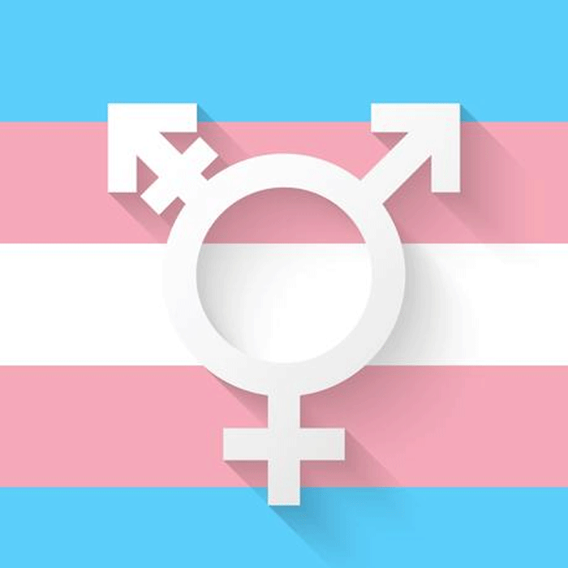

<!--
这是一个非常重要的字典，所有class标签里带有“TP_”开头的块的内容都可以在这里找到！！！


搜索词条用Ctrl+F搜索class

添加词条办法

这是一个模板
<template id="TP_class"><!_ _很怪_ _>
    想被操
</template>
只需要将这个模板复制到对应文件的div里就可以了
一定保持这个文件的整洁性
一定保持这个文件的整洁性
一定保持这个文件的整洁性
一定保持这个文件的整洁性


-->

<template id="head"><!--設置全部頁面元數據-->
  <meta charset="UTF-8">
  <title>男娘調查計劃 | Website</title>
  <link rel="stylesheet" href="css/main.css" /><!--全网站统一标准-->
  <link rel="stylesheet" href="css/IndexTitleCursor.css" /><!--设置主页标题动画的光标，其他地方也可以调用-->
  <link rel="stylesheet" href="css/bg_setting.css" /><!--背景顏色設置-->
  <link rel="icon" href="/icon.png" /><!--图标-->
</template>

<template id="javascript"><!--全頁面的js加載全在這裏！，但是，，需要直接寫在每個頁面，否則失效-->
  <script src="js/IndexTransgender.js"></script><!--Index页面上的彩蛋——國際跨性別現身日时会将标题中的GTEJR变成跨性别旗-->
  <script src="js/IndexTitleCursor.js"></script><!--主页动画-->
  <script src="js/else-link.js"></script>
  <script src="/js/markdown.js"></script>
</template>


<template id="bg_setting"><!--網頁背景個人化代碼-->
  <button id="toggleSettings" style="animation: IndextoggleSettings 2s forwards;">
    
  </button><!--背景颜色设置按钮 其中因爲主頁動畫原因，他的動畫是單獨的，在index.css裏-->
  <div id="settingsPanel" class="DivStyle-Glass"><!--設置背景顏色-->
    <label for="bgColorPicker">選擇背景顏色</label>
    <div class="flat-color" id="display-color"><!--調色盤按鈕，這一行是美化，下一行是主體。主體不透明度0-->
      <input type="color" id="bgColorPicker" style="width: 100%; height: 100%; opacity: 0;" />
    </div>

    <div style="margin-top: 1rem;"><!--手動輸入16進制顔色代碼-->
      <div>
        <input type="text" id="hexInput" placeholder="手動輸入顏色代碼" maxlength="7" style="height: 25px;" />
        <br>
      </div>
      <br>
    </div>

    <div class="color-options"><!--預設-->
      <div class="color-button" style="background-color: #8dcaff;" data-color="#8dcaff"></div>
      <div class="color-button" style="background-color: #ffe6e6;" data-color="#ffe6e6"></div>
      <div class="color-button" style="background-color: #e6ffe6;" data-color="#e6ffe6"></div>
      <div class="color-button" style="background-color: #f5e6ff;" data-color="#f5e6ff"></div>
      <div class="color-button" style="background-color: #fff3cc;" data-color="#fff3cc"></div>
    </div>
  </div>
</template>


<template id="main_2"><!--副標題設置，可修改-->
  讓社會正視你們！
</template>


<!--这是blig的had模板--><!--待修改-->
<template id="blig_had" class="DivStyle-Glass">
  <a href="index.html" data-animate-link>
    
  </a>
  <a class="button" href="Self-introduction.html" data-animate-link>自我介紹</a>
  <a class="button" href="https://youtube.com/@HosinoEJ" data-animate-link>Youtube</a>
  <a class="button" href="https://github.com/HosinoEJ" data-animate-link>Github</a>
</template>